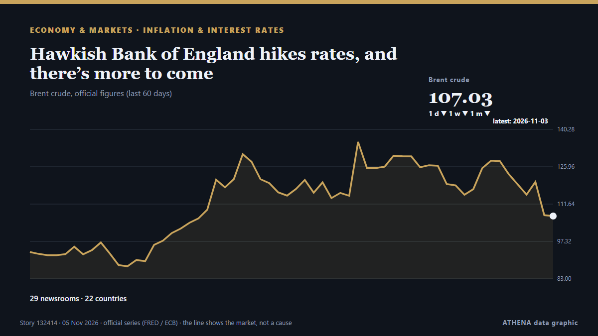

Hawkish Bank of England hikes rates, and there’s more to come

On Tuesday, Bank of Canada (BoC) Governor Tiff Macklem appeared before the House of Commons Standing Committee on Finance and said that “further rate hikes may be needed” because the war in the… from FXStreet
Reported independently by 30 outlets in 19 countries since 2 Nov, first by Business Recorder; coverage is still spreading. ATHENA rates the risk moderate (3.1/10), driven mainly by the severity of the harm described and the pace of the reporting. Confidence is 89% (high), with 30 independent outlets corroborating it and an average source reliability of 71%. Newsrooms by country: Malaysia (18), Spain (3), Pakistan (2). Coverage: 2 Nov to 5 Nov, 70 hours.
Why it matters: Central banks set the price of money; their rate decisions and signals move currencies, bonds, mortgages and stock markets worldwide.
What changed: 41 new reports from 22 newsrooms in the 24 hours to 5 Nov.
First reported as: Fed rate pause raises concerns over costs and global growth
At a glance
Selected, scored and written by ATHENA's published methodology. No editor intervenes in individual events. How this is produced ›
| 02 Nov 06:03 UTC | 1 |
|---|---|
| 02 Nov 09:03 UTC | 0 |
| 02 Nov 12:03 UTC | 0 |
| 02 Nov 15:03 UTC | 0 |
| 02 Nov 18:03 UTC | 0 |
| 02 Nov 21:03 UTC | 1 |
| 03 Nov 00:03 UTC | 0 |
| 03 Nov 03:03 UTC | 0 |
| 03 Nov 06:03 UTC | 0 |
| 03 Nov 09:03 UTC | 1 |
| 03 Nov 12:03 UTC | 0 |
| 03 Nov 15:03 UTC | 5 |
| 03 Nov 18:03 UTC | 0 |
| 03 Nov 21:03 UTC | 0 |
| 04 Nov 00:03 UTC | 3 |
| 04 Nov 03:03 UTC | 6 |
| 04 Nov 06:03 UTC | 6 |
| 04 Nov 09:03 UTC | 4 |
| 04 Nov 12:03 UTC | 2 |
| 04 Nov 15:03 UTC | 2 |
| 04 Nov 18:03 UTC | 1 |
| 04 Nov 21:03 UTC | 2 |
| 05 Nov 00:03 UTC | 5 |
| 05 Nov 03:03 UTC | 5 |
| 05 Nov 06:03 UTC | 5 |
| 05 Nov 09:03 UTC | 6 |
| 05 Nov 12:03 UTC | 15 |
Why these numbers
Importance
Risk
Confidence
The reporting — who reported it, and when
headline as published · opens the original- Business Recorder · PakistanAustralian shares retreat on weak miners, banks ahead of rate call
- The Journal of Commerce (JOC) ·Window for record intermodal savings closing as rate hikes loom
- Oman Observer · OmanFed rate pause raises concerns over costs and global growth
- New Straits Times · MalaysiaMalaysia's Global Sukuk attracts US$9.5bil demand, reflecting investor confidence
- FXStreet · SpainNational Bank of Poland: Policy on extended hold – ING
- investingLive (ForexLive) · INTBOC's Macklem: There could be a need to raise the policy rate further
- FXStreet · SpainBoC’s Macklem signals more rate hikes as Oil fuels inflation risks
- Hespress English · MoroccoMorocco's living poverty rate falls to 22%, but 8 million remain affected
- New Straits Times · MalaysiaStrong growth revives case for OPR hike [WATCH]
- New Straits Times · MalaysiaOPR hike to boost bank earnings, deposit rivalry a concern
- Malay Mail · MalaysiaAs data centre power share heads for 21pc, Putrajaya moves to avoid ‘phantom demand’ hogging Malaysia’s grid
- New Straits Times · MalaysiaTalent key factor in attracting investments under global minimum tax: Tengku Zafrul
- Malay Mail · MalaysiaMalaysia secures record-low spread on dollar sukuk as global demand hits US$9.5b
- People Daily · KenyaKenya medical hospital bills projected to rise by 13% in 2027
- Bangkok Post — page reader · ThailandThai business group raises 2026 growth forecast
- Business Recorder · PakistanAustralian shares close at lowest in over a week; miners, banks weigh
- Malay Mail · MalaysiaPutrajaya rejects foreign pressure to hike defence spending, maintains non-aligned stance
- New Straits Times · MalaysiaParamount, Mitsui Fudosan tie-up for RM1.3bil luxury KL project
- New Straits Times · MalaysiaThai business group raises 2026 growth forecast to 2.4-2.6pct
- New Straits Times · MalaysiaMalaysia's urbanisation rate projected to exceed 85pc by 2040, says Nga
- New Straits Times · MalaysiaPeninsula power demand set to hit 33.5GW by 2035
- Sveriges Riksbank · SwedenPolicy rate raised to 2 per cent
- Malay Mail · MalaysiaTengku Zafrul says Malaysia’s RM431.1b approved investments reflect investor confidence as country courts new partnerships
- New Straits Times · MalaysiaMaybank Premier offers more than preferential deposit rates
- New Straits Times · MalaysiaEnvironmental conditions imposed on data centres, says Anwar
- investingLive (ForexLive) · INTHow will central banks wrap up the year?
- New Straits Times · MalaysiaFDI vital to Malaysia's economic growth, says Anwar
- Container News · GreeceFreightos Weekly Update: Asia – US air rates already nearing last year’s high on peak season volumes
- FXStreet · SpainPoland NBP Base rate in line with forecasts (3.75%)
- The Botswana Gazette · BotswanaBanks Free To Raise Lending Rates
- FreightWaves · United StatesAsia-US container rates hold as carriers seek $3,000 November rate hikes
- FreightWaves · United StatesDry Van & Reefer: Market Signals You Can’t Ignore
- New Straits Times · MalaysiaJohari: Malaysia must be more than a host for tech giants
- Nikkei Asia · JapanJapan logistics startups expand cold food networks in Malaysia, Vietnam
- The Business Times · SingaporeMalaysia set to hold rates on strong growth, signal hike in 2027
- The Business Times · SingaporeMalaysia holds rates, vows vigilance as inflation pressures grow
- Malay Mail · MalaysiaLearn from Trump’s midterm defeat: Guan Eng warns Putrajaya over ‘phantom growth’
- The Rio Times · BrazilBotswana Raises Growth Forecast to 3.8%
- New Straits Times · MalaysiaMalaysian shoppers turn selective as Asean growth fails to lift FMCG spending
- DigiTimes Asia · TaiwanPrice hikes, market saturation curb global telecom, consumer electronics export growth